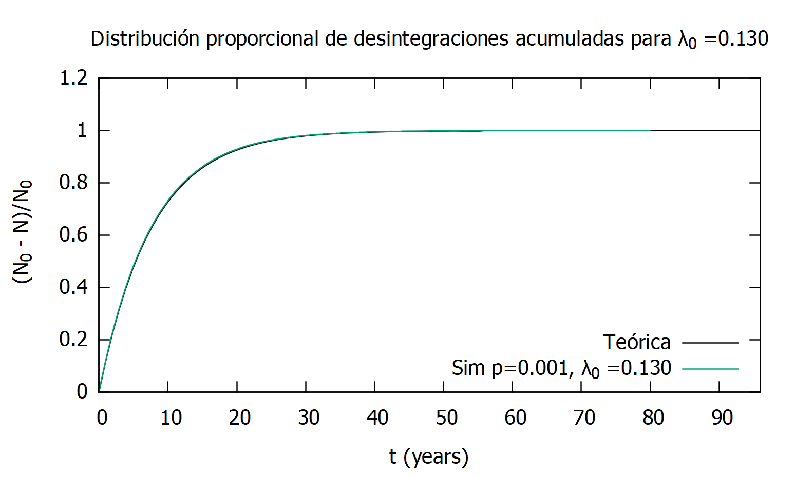

Ejercicio 3¶
-
int ejercicio3(const char [] outPath) - Parameters
- outPath: string
Directorio a utilizar para la salida de los archivos de datos de las diversas simulaciones. Comprobado y/o creado mediante
checkAndCreateDirectory()
Durante la ejecución del código del ejercicio 3, se procederá a la simulación de la desintegración completa de M conjuntos de N_0 núcleos activos de Cobalto 60. Mediante esta simulación, podremos comprobar el comportamiento estadístico de la diferencia de tiempo entre sucesos a lo largo del proceso de desintegración. Para ello, simularemos M procesos de desintegración, calculando esta vez la distribución acumulada de desintegraciones:
(1)¶\[F(t)=\operatorname{prob}(X \leq t)=\frac{N_{0}-\langle N(j)\rangle_{M}}{N_{0}}\]Siendo \(\langle N(j)\rangle_{M}\) el promedio de núcleos activos en el paso j, es decir:
(2)¶\[\langle N(j)\rangle_{M}=\frac{1}{M} \sum_{z=1}^{N} N_{k}(j)\]Y comprararemos los resultados con la curva teórica:
(3)¶\[F(t)=1-e^{-\lambda, t}\]En el código de este ejercicio se facilita la opción de realizar una simulación parametrizada mediante:
- maxScenarios: int
Número de escenarios distintos que se analizarán.
- maxTime: int
De cara a la representación gráfica de los resultados, se da la posibilidad de ampliar o reducir el límite de tiempo a representar en dichas gráficas, pudiéndose así focalizar en las zonas deseadas de la misma. Una vez introducido este parámetro, las entradas del archivo de datos generado se verán alteradas así como su correspondiente representación. (Aplica a todos los casos en conjunto)
- N_0: int[]
Cantidad inicial de núcleos a desintegrar. (Por caso estudiado)
- p_disintegration: float[]
Probabilidad de desintegración de cada núcleo en cada paso del proceso. (Por caso estudiado)
- plottingStep: int[]
Paso a utilizar a la hora de exportar los datos. Cuando plottingStep > 1, se representarán exclusivamente aquellos pasos de la desintegración múltiplos de plottingStep.
>>> plottingStep = 3 -> dataSimulated = 1, 2, 3, 4, 5, 6, 7, 8, 9 >>> dataRepresented = 3, 6, 9
- lambda_0: float[]
Parámetro característico del los núcleos a simular (Cobalto 60 : 0.13), que describe el comportamiento de dichos núcleos en función del tiempo. (Por caso estudiado)
- M: int[]
Ciclos de repetición de la simulación para la ponderación de los resultados. (Por caso estudiado)
En este caso, nos ceñiremos a la simulación de los casos planteados en la PEC, que constan de los siguientes datos:
>>> N_0 = 1000, p_disintegration = 0.001, lambda_0 = 0.13, M = 1 >>> N_0 = 1000, p_disintegration = 0.001, lambda_0 = 0.13, M = 100
Para cada una de las casuísticas planteadas, se realizará el siguiente proceso:
Basándonos en la metodología del
ejercicio2(), realizaremos la simulación de desintegración completa del conjunto, pero esta vez repetiremos cada una de las simulaciones M veces, para posteriormente poder ponderar los datos como se especificaba previamente en la ecuación (2).Para ello, utilizaremos
simulateF_t(), donde almacenaremos los datos de desintegración \(\langle N(j)\rangle_{M}\) en un array temporal para posteriormente ponderar sus resultados utilizando la ecuación (2) y almacenarlos en el array bidimensional F_t[][], al mismo tiempo que generaremos los datos para el array bidimensional t[][] que ya mencionamos en elejercicio2().En este caso, al tratarse de una simulación ponderada, la precisión de los datos será mucho mayor, por lo que no será necesario añadir todos los datos al archivo de datos de entrada para su representación. Es por esto que se utilizará el parámetro plottingStep para definir la resolución de dicha gráfica.
Así mismo, esta función devolverá los tiempos de desintegración y semidesintegración del conjunto, esta vez ponderados, que podremos comparar posteriormente con los resultados teóricos del Cobalto60.
Una vez obtenidos estos resultados, utilizaremos GNUPlot para graficar los datos obtenidos en los escenarios analizados así como la curva teórica que definirá el comportamiento de los mismos. En este caso, dada la similitud de los resultados de los casos a analizar en esta PEC, utilizaremos una gráfica para cada una de las simulaciones para facilitar su visualización. Por lo que serán los parámetros característicos de cada una de los datos simulados los que definan el comportamiento de la curva teórica, pudiendo obtener varias curvas teóricas diferentes en cada uno de los escenarios.
Como podemos comprobar en las siguientes figuras, los datos obtenidos en la simulación se corresponden con la curva teórica y su precisión mejora a medida que incrementa el número de simulaciones (M), como ya mencionamos en el
ejercicio2(). Podemos por lo tanto concluir que el tiempo medio transcurrido entre desintegraciones seguirá una distribución similar a la distribución representada a continuación, solo que tratándose de tiempo en lugar de desintegraciones.
Distribución proporcional de desintegraciones acumuladas \(F(t)\) del Cobalto60 para N = 1000 (M = 1).¶
Distribución proporcional de desintegraciones acumuladas \(F(t)\) del Cobalto60 para N = 1000 (M = 100).¶
Nota
\(F(t)\) representa la distribución acumulada del número de desintegraciones, que describirán el comportamiento del tiempo transcurrido entre las mismas, pero no se trata de la distribución del tiempo como tal.